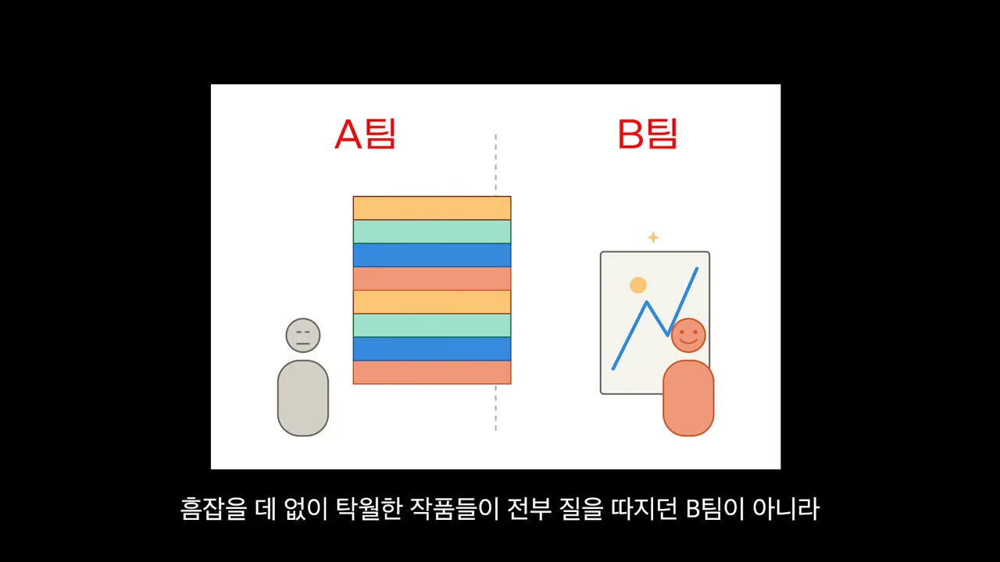
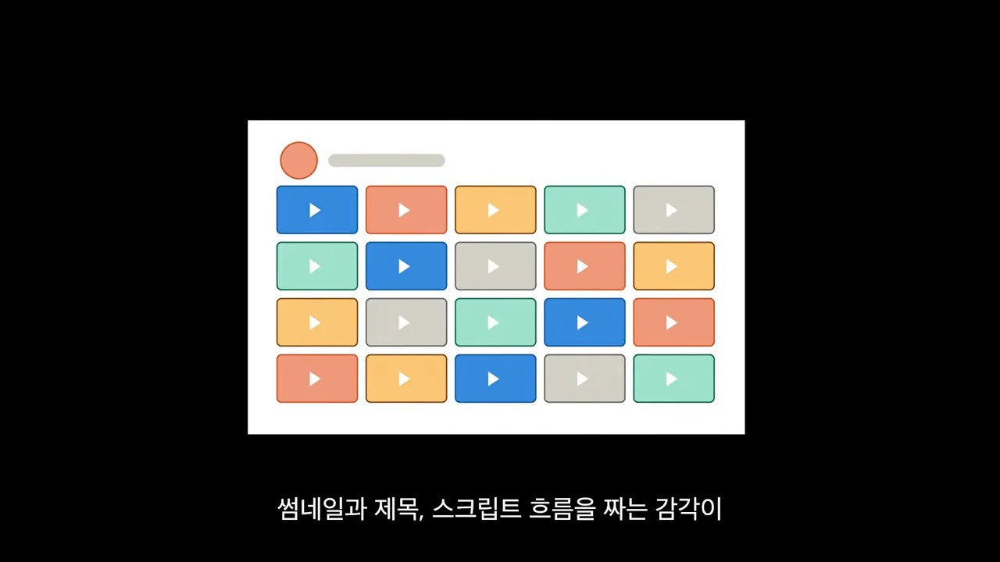
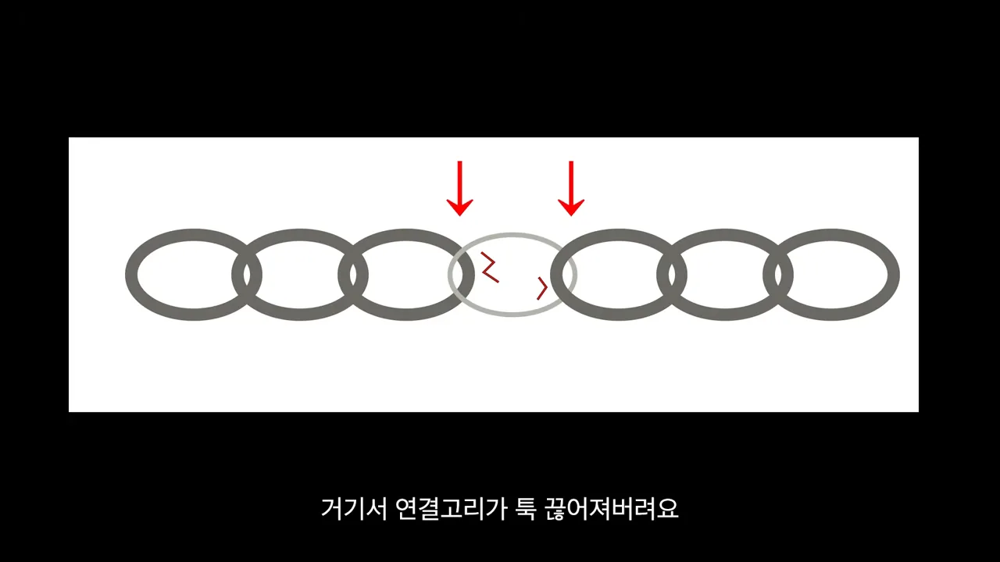
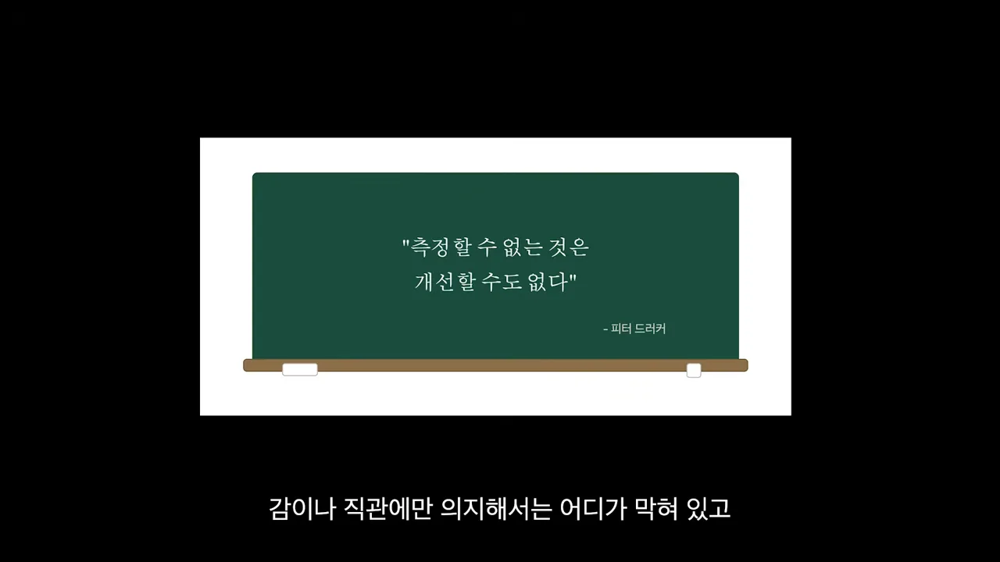
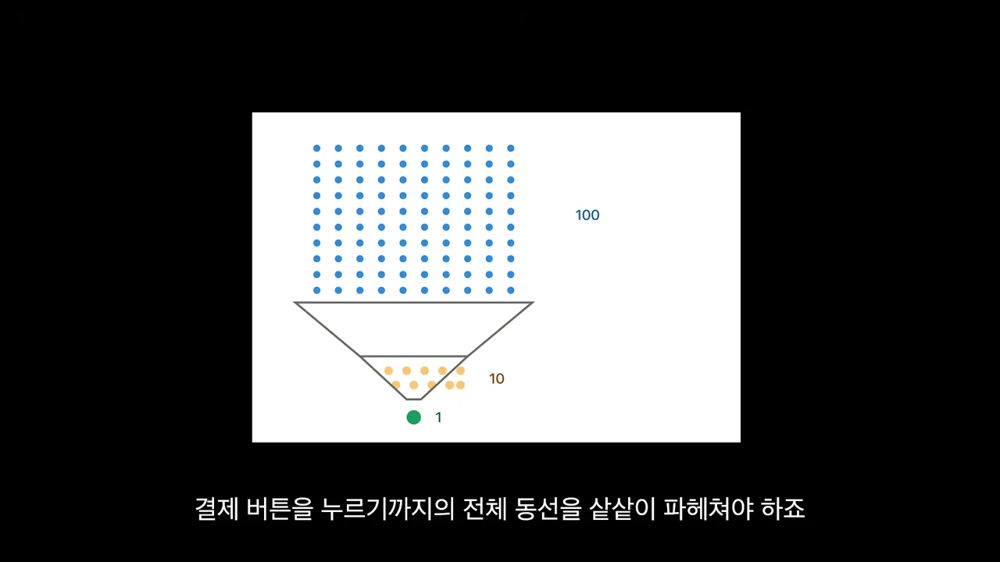
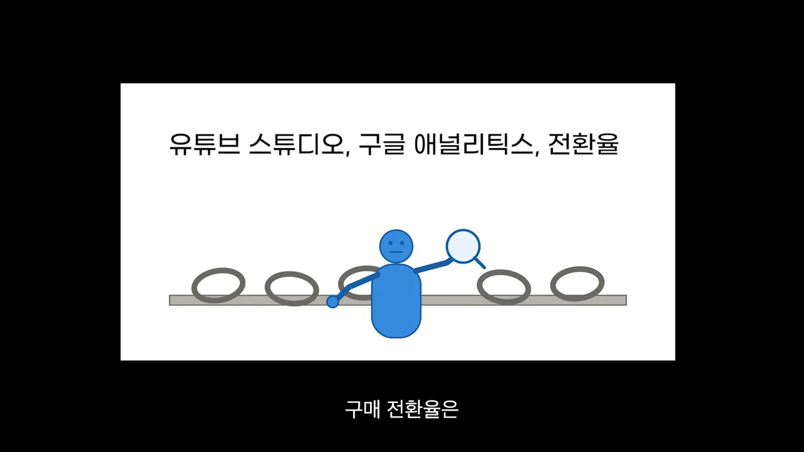
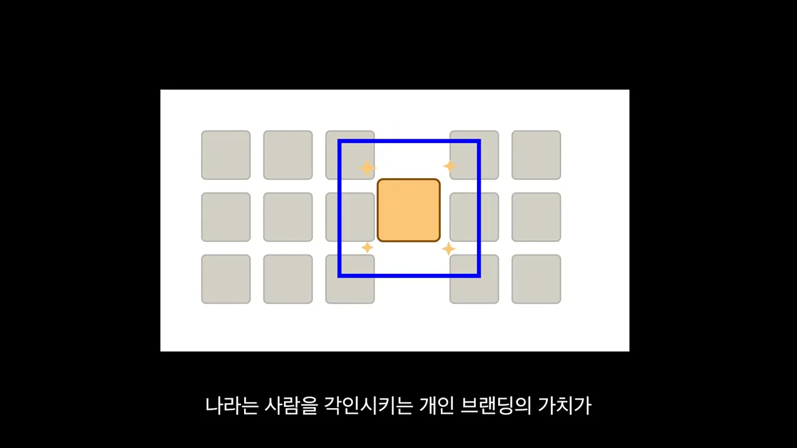
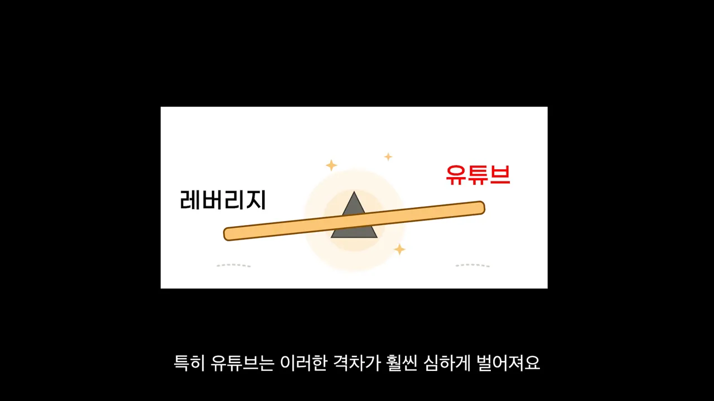

처음에는 양이 질을 이겨요
화자는 사업의 본질을 딱 두 가지로 봐요. 제대로 만들고, 그걸 제대로 파는 거예요. 둘 다 잘하는 비결로 먼저 꺼내는 건 의외로 '양'이에요.
개수로 평가받은 팀이 더 좋은 작품을 냈어요
근거는 창작자의 심리를 다룬 한 교양서에 나오는 실험이에요. 미술 선생님이 학생을 두 팀으로 나눴어요. A팀은 학기 동안 만든 작품 개수로만, B팀은 가장 완벽한 한 점으로만 점수를 줬어요. 아래 화면 왼쪽에 A팀이 쌓아 올린 작품 더미가, 오른쪽에 B팀이 공들인 한 장이 있어요.

화자도 작년부터 매주 한 편, 한 달에 네 편씩 영상을 빠짐없이 올렸어요. 화면에 줄지어 선 색색의 재생 버튼이 그렇게 쌓인 영상들이에요. 계속 만들다 보니 썸네일·제목·대본 흐름을 짜는 감각이 몸에 붙었고, 조회수가 크게 터져 실제 매출로 이어진 영상도 생겼다고 해요.

양만으로는 어느 순간 멈춰요
그런데 개수 채우기에 급해지자 어느 순간 제자리걸음을 하는 느낌이 들었다고 해요. 실행량은 직관적인 감각을 키워 주지만, 감각만으로는 사업 규모를 키울 수 없다는 거예요. 그래서 숫자로 된 데이터를 분석하고, 그 결과로 전략을 계속 고쳐야 해요. 화자는 압도적인 실행량과 냉정한 데이터 분석이 톱니바퀴처럼 맞물릴 때 크게 성장한다고 말해요.
이걸 수영에 비유해요. 화면 왼쪽은 물속에서 헤엄치는 사람, 오른쪽은 역기를 든 사람이에요. 물에 뜨고 자유형을 하려면 일단 물에 많이 들어가 봐야 하지만, 물놀이만 해서는 선수가 되지 못해요. 선수들은 영법 자세를 따로 교정하고, 필요한 근육은 웨이트 트레이닝으로 키워요.
정리하면 순서가 있어요. 일정 궤도에 오르기 전까지는 실행량을 쏟아붓고, 흐름이 몸에 익은 다음부터는 데이터를 기준으로 방향을 미세하게 조정해요.
사업은 사슬, 가장 약한 고리부터
혼자 사업을 시작하면 할 일이 100개쯤 쏟아져요. 영상 제작, 썸네일 디자인, 대본 작성, 상품 업그레이드까지요. 그런데 그중 실제로 통장 잔고를 늘려 주는 건 몇 가지뿐일 가능성이 커요. 그래서 화자는 막힌 곳, 곧 병목부터 찾자고 해요.
약한 고리 하나가 사슬 전체를 끊어요
화자는 사업 구조를 쇠사슬에 빗대요. 내 영상을 본 사람 중 일부가 팬이 되고, 그중 일부가 지갑을 열고, 그중 일부가 단골로 남아요. 아래 화면 가운데 연한 고리 하나가 금이 간 채 끊어져 있고, 빨간 화살표가 바로 그 지점을 가리켜요.

고리가 끊긴다는 건 그 단계의 숫자가 0이 된다는 뜻이에요. 그러면 매출 자체가 생기지 않아요. 그러니 아무 데나 힘을 쏟을 게 아니라, 가장 약한 지점을 정확히 찾아 거기만 집중해서 보강해야 해요.
찾으려면 먼저 재야 해요
약한 고리를 어떻게 찾을까요? 화자는 칠판에 적힌 한 문장을 꺼내요. 오른쪽 아래에 '피터 드러커'라고 적혀 있어요.

퍼널로 막힌 구간 찾기
상품이 잘 안 팔리면, 고객이 나를 처음 알게 된 순간부터 결제 버튼을 누를 때까지의 동선을 샅샅이 살펴봐야 해요. 이 동선을 단계별로 나눈 게 퍼널이에요. 아래 화면처럼 위에서 점 100개가 들어가면 깔때기를 지나며 10개로, 마지막엔 1개로 줄어들어요.

단계마다 고칠 곳이 달라요
영상 채널을 쓰는 사업이라면 퍼널은 '클릭 → 내용 감상 → 판매 페이지 → 구매' 네 단계예요. 화면의 빨간 글씨는 각 단계에서 막혔을 때 손볼 곳이에요. 클릭 앞에는 '썸네일·제목', 감상 앞에는 '도입부', 판매 페이지 앞에는 '대본 구조', 구매 앞에는 '랜딩페이지', 구매 뒤에는 '상품'이 붙어 있어요.
영상이 말한 증상과 처방을 표로 옮기면 이래요.
| 이런 증상이면 | 여기를 고쳐요 | 볼 숫자 |
|---|---|---|
| 영상을 클릭하지 않아요 | 썸네일과 제목 | 클릭률 (유튜브 데이터) |
| 켜자마자 꺼요 | 초반 도입부 | 시청 지속 시간 (유튜브 데이터) |
| 랜딩 페이지로 넘어오지 않아요 | 영상의 이야기 구조와 멘트 | 랜딩 페이지 방문 (구글 애널리틱스) |
| 페이지까지 와서 안 사요 | 랜딩 페이지 구성과 문구 | 구매 전환율 (방문 대비 판매 수) |
| 샀는데 다시 안 사요 | 상품 품질 자체 | 재구매 |
숫자는 어디서 구하나요
화면 위쪽에 도구 이름이 적혀 있어요. 유튜브 스튜디오, 구글 애널리틱스, 그리고 전환율이에요. 그 아래로 사람이 돋보기로 사슬 고리를 하나씩 들여다보고 있어요.

문제가 터지면 큰 덩어리를 잘게 쪼개 하나씩 들여다보면 돼요. 그리고 결과가 나올 때까지 이 과정을 계속 되풀이해요.
AI가 따라 할 수 없는 무기, 개인 브랜드
마지막 이야기는 앞으로의 시장이에요. 화자는 누구나 자기 독창성과 기획력을 마음껏 펼치는 시대가 온다고 봐요. 반대로 지금 하는 일이 누구나 쉽게 배울 수 있는 종류라면, 시장에서 가장 싼값에 빠르게 밀려난다고 해요.
완성도는 비슷해졌고, 사람이 차이가 돼요
이유는 두 가지예요. AI가 사람의 노동을 빠르게 흡수하고 있고, 인터넷 덕분에 온갖 노하우가 자유롭게 오가요. 그래서 시중의 상품과 서비스 완성도는 거의 비슷해졌어요. 아래 화면에서 똑같은 회색 칸들 사이에 노란 칸 하나만 파란 테두리로 강조돼 있어요.

왜 하필 사람일까요? 다음 화면 왼쪽은 'AI, 인터넷'이라고 적힌 로봇, 오른쪽은 빛나는 사람이에요. AI는 정해진 지침과 규칙은 완벽하게 본뜰 수 있어요. 하지만 나만의 독창적인 서사와 철학, 고유한 가치관까지 복제하지는 못한다는 게 화자의 설명이에요.
지렛대를 쓰는 사람과 안 쓰는 사람
많은 사람이 반복적이고 단순한 일의 입지가 줄고 있다는 걸 이미 느끼고 있어요. 그런데 정작 AI와 미디어라는 강력한 지렛대는 거의 쓰지 않아요. 개인 브랜드를 쌓기에 이보다 좋은 환경이 없는데도요. 화면에는 '레버리지'와 '유튜브'라는 글씨가 시소처럼 기운 판자 양쪽에 붙어 있어요.

결론: 성장 방법은 단순해요
화자는 이 사업에서 크는 방법이 오히려 쉽다고 정리해요. 데이터로 어디서 병목이 생겼는지 찾고, 새로운 시도를 계속 던지며 전체 실행량을 늘리면 된다는 거예요. 앞의 두 이야기, 곧 양과 병목이 여기서 다시 만나요. 그리고 막혀서 답답할 때를 위한 방법을 하나 더 보태요. 화면에는 '벤치마킹'이라는 글씨와 함께, 깃발을 향해 줄을 뻗는 사람이 그려져 있어요.
길은 이미 열려 있어요. 활용하는 사람만 잡을 수 있어요.
— 영상 06:41